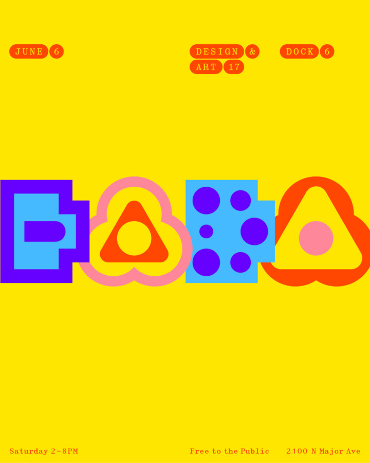

Design & Art 17
Design & Art 17
Dock 6 Collective: 2100 N Major Ave, Chicago, IL 60639
Saturday, June 6, from 2:00 pm to 8:00 pm
Free to the public
The Design & Art Series merges furniture design with fine art in the industrial environment of the Dock 6 shop. It emphasizes the connection between these art forms while respecting their unique characteristics. The Dock 6 family has selected a group of artists and designers to exhibit their work throughout the warehouse.
Dock 6 Collective promotes its work both individually and collectively, providing carefully crafted products to architects, interior designers, retailers, contractors, artists, and the public. Based in Chicago’s Belmont–Cragin neighborhood, Dock 6 also serves as a hub for the local creative community, encouraging open dialogue between artists and designers.
Dock 6 Collective is a group of five independent designers, furniture-makers, and fabricators operating out of a shared workshop in Chicago’s Belmont–Cragin neighborhood:
Carson Maddox Studios, Lagomorph Design, Navillus Woodworks, zakrose, -ism furniture.